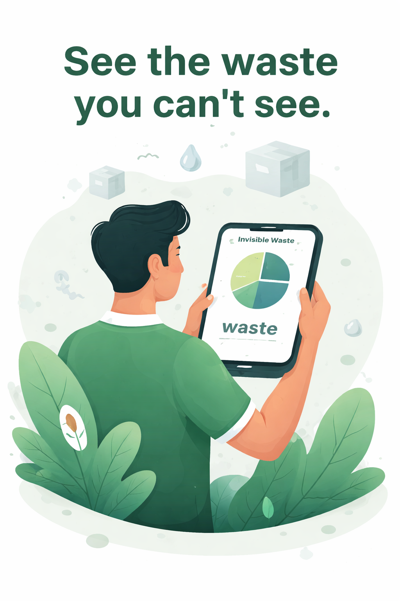

Invisible Waste Footprint Prediction System
Turn everyday bills into environmental intelligence with Waste Shadow.
Upload grocery bills or shopping data, uncover visible and invisible waste, estimate water footprint, and project how today’s buying habits affect the next 30, 90, and 365 days.

Why Waste Shadow
See the waste that does not show up in your dustbin.
Problem
Most sustainability tools focus on disposal. Waste Shadow predicts hidden waste from production, packaging, transport, and water usage before it accumulates.
System Flow
Upload bills, classify products and packaging, estimate waste coefficients, generate an Invisible Waste Index, and project future impact.
What We Measure
Visible waste, invisible waste, water footprint, category-wise contribution, and 30/90/365-day projection trends.
Mission
Make preventive sustainability practical by helping people choose lower-impact alternatives before waste is created.
Upload + Predict
Analyze a grocery bill or purchase sheet.
Supported file types: CSV, XLSX, PDF, JPG, JPEG, PNG.
Dashboard
Live purchase impact analytics
A richer sustainability dashboard with chart-based views for products, categories, packaging, and projections.
Visible vs Invisible Waste
Bar chart comparison for the current analysis
Category Contribution
Invisible waste by product category
Waste Split
Doughnut chart for total waste composition
Packaging Mix
Share of invisible waste by packaging type
Future Projection
30, 90, and 365-day waste growth line chart
Top Products
Top contributors to invisible waste
Sustainability Insights
Actionable sustainability guidance for every bill.
Readable, action-focused suggestions designed to help users swap high-impact habits quickly.
Smarter Alternatives
Lower-impact swaps you can act on right now
Tailored suggestions based on the strongest waste drivers in your latest bill.
Recent Analyses
Your stored waste reports
Stored reports from the local database